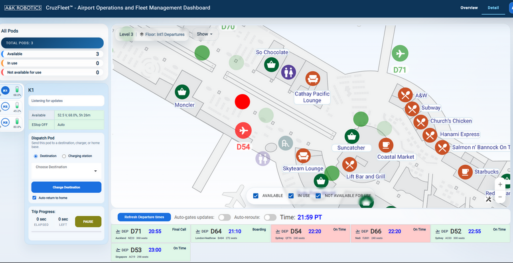
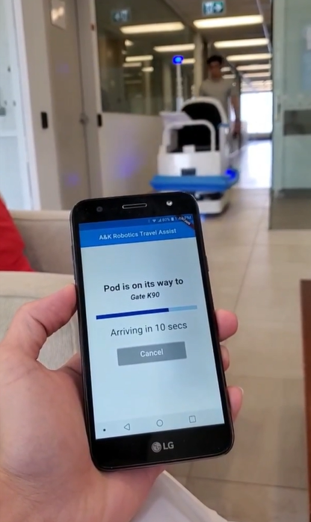

WORK PROJECT / CLOUD & APIS
Fleet management platform
Web and mobile tools for fleet operations, busy-gate awareness, and automatic robot detours.
Project context
This full-stack platform connected airport staff, passengers, and autonomous robots through a shared cloud backend. Staff could monitor and dispatch the fleet from a web interface, while passengers could request a robot through a mobile application. Flight and gate information also supported awareness of busy gate areas, linking airport activity with zone management and robot navigation.
My contributions
- Developed cloud-managed backend services and centralized robot information for fleet monitoring and control.
- Built web features for live tracking, dispatch, operational analytics, flight integration, and multi-site administration.
- Integrated flight and gate information to identify busy gate areas and support operational decisions.
- Implemented zone-management capabilities so that activating a zone causes robots to detour automatically around the affected area.
- Developed a mobile application for requesting robots to specific destinations.
- Integrated real-time database automation, serverless functions, and authentication workflows.
Busy gates and automatic detours
The system connects gate activity with navigation controls. It can identify busy gate areas and supports activating zones that robots automatically route around.
- Identify busy gate areas
Use integrated flight and gate information to recognize areas with elevated airport activity.
- Activate a zone
Apply a navigation restriction to the affected area through the platform’s zone-management capability.
- Detour automatically
Robots route around the active zone, adapting their journeys to the restriction.
This brings fleet oversight and navigation responses into the same operational workflow, helping staff manage robot movement around busy areas.

